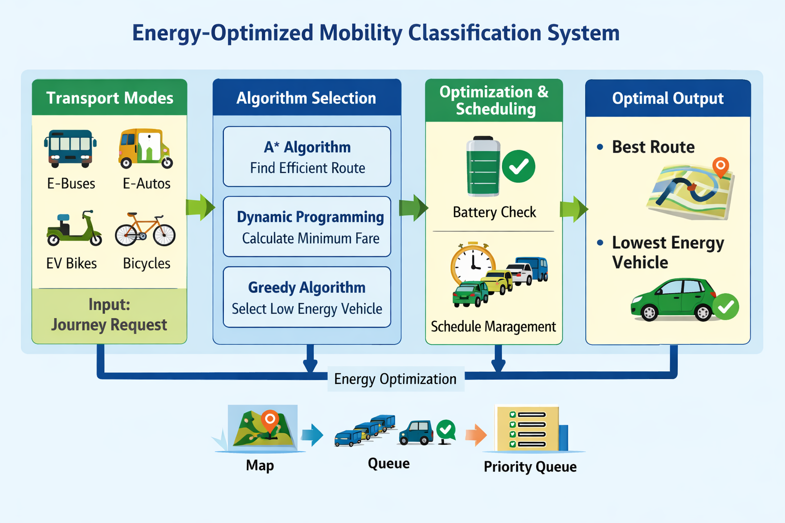

Modern smart cities rely heavily on electric transportation such as E-buses, E-autos, metro feeders, shared EV bikes, and bicycles. Selecting energy-efficient transport modes is crucial for reducing energy consumption and operational cost.
This system applies Design and Analysis of Algorithms (DAA) concepts to classify transport modes, compute minimum fare, optimize vehicle selection, and manage scheduling efficiently.
Used to find the most energy-efficient route using heuristic-based shortest path selection in a smart city road network.
Used to calculate the minimum fare by breaking the problem into optimal subproblems and reusing previously computed results.
Used to select the transport vehicle with the lowest energy consumption per kilometer.
Used to classify and store transport types with their energy consumption values for fast lookup and management.
Used for transport scheduling and managing arrival order using FIFO principle.
Used to rank electric vehicles based on battery availability to ensure optimal usage.
View Complete Integrated C++ Code | DS / Algorithm | Design Technique | Time Efficiency | Space Efficiency | Stability | Adaptive | In-Place |
|---|---|---|---|---|---|---|
| A* | Heuristic | O(E log V) | O(V) | N/A | No | No |
| Dynamic Programming | Optimal Substructure | O(n × k) | O(n) | Stable | No | No |
| Greedy | Greedy Choice | O(n) | O(1) | No | No | Yes |
| Map | Hashing | O(1) | O(n) | Stable | No | No |
| Queue | FIFO | O(1) | O(n) | Stable | No | No |
| Priority Queue | Heap | O(log n) | O(n) | Unstable | No | No |